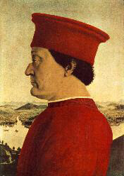

PIERO DELLA FRANCESCA

Il più perfetto esempio di corte umanistica è il palazzo Ducale eretto da Federico da
Montefeltro nella piccola Urbino.
Con una lungimiranza veramente eccezionale, il duca ospita ad Urbino letterati,
umanisti, architetti e pittori di varie nazioni, ciascuno dei quali contribuisce ad
un dialogo internazionale sull'arte di altissimo livello. Su tutti spicca Piero della
Francesca, che esegue opere destinate a diventare esempi assoluti, come la Pala
Montefeltro, oggi nella Pinacoteca di Brera a Milano, modello insuperabile di
sintesi prospettica di forma e colore.